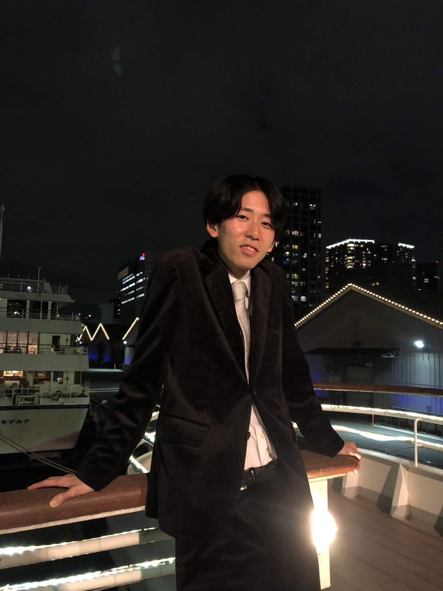

Max Planck Institute for Mathematics
Vivatsgasse 7, 53111 Bonn, Germany
Email: kazuma[at]mpim-bonn.mpg.de

About me
I am a Postdoc at the Max Planck Institute for Mathematics.
I am interested in number theory and representation theory of Hecke algebras and p-adic reductive groups.